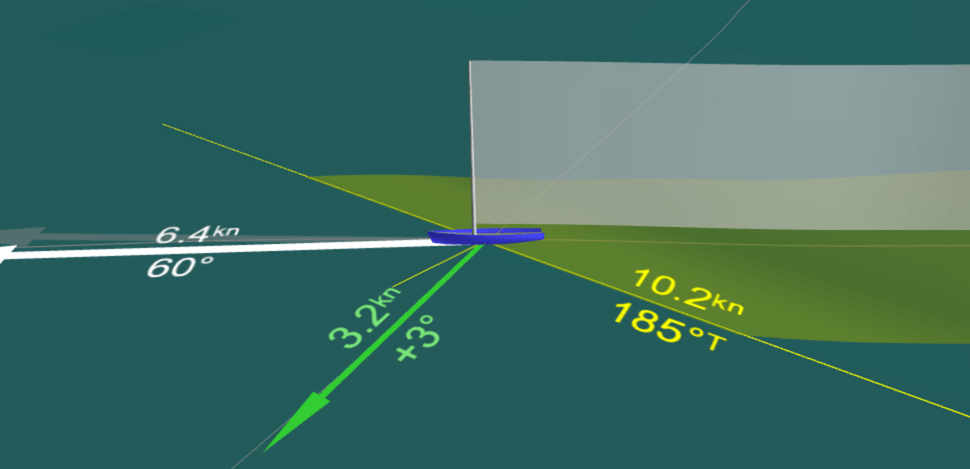

If your recording contains magnetic heading and speed (through water or "log") data, See Sailing will automatically use water referenced calculations - and will mark them as such on your account page.
This is all well and good but ... what does Water Referenced actually mean?
The wind blows the sails, the boat moves through the water. However, the water itself is often also moving and this means that our sog/cog velocities as reported by the GPS are not an accurate representation of the efficiency of our sailing.
So to find accurate true wind, VMG, or target speeds we need to use "through water" measurements.
The only real hint that water referenced calculations have been used is that there are now two velocity arrows on the main display:
Shown here is the through the water speed (6.4 knots) and pointing angle (60 degrees) of the yacht next to a light grey arrow that shows the course and speed as reported by GPS. It is tempting to assume that the difference between the two is the tide or current at that particular point - but any mis-calibration in the compass skews this result considerably so it is not to be trusted.
See Sailing needs an NMEA 2000 log and compass that emit the PGN 128259 and 127250 messages. It also relies on your compass returning the correct magnetic variation; and preferrs to receive attitude data as provided by your compass so ensuring this is correctly mounted is a good idea, too.
On the source maps, these messages are referred to as the 'spd' and 'hdg' streams. Thus disabling one or both of these will result in water referencing also being disabled.